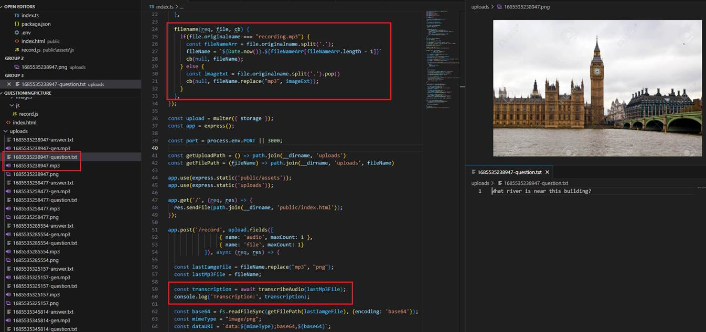
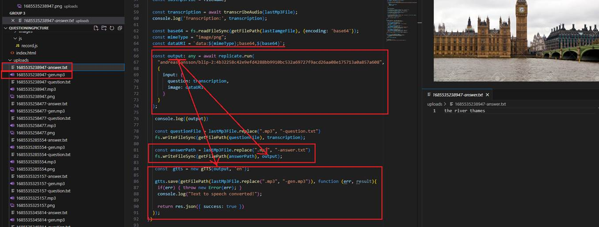
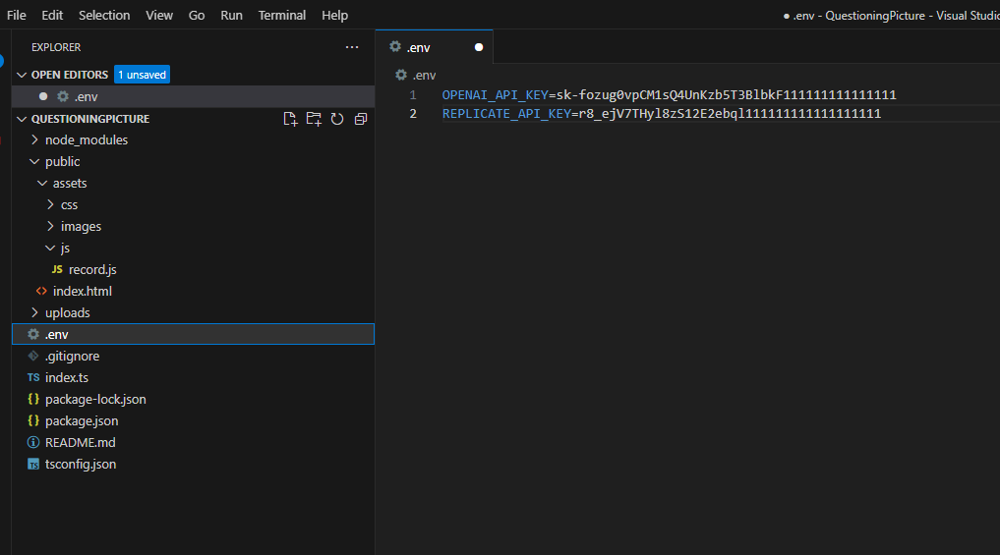

Answering Questions About Images
This is a Node.js app where you can upload images, ask questions about images using voice prompts, then listen to the responses in voice.
Voice to Text: I turn an audio into text using Whisper https://openai.com/research/whisper which is an OpenAI Speech Recognition Model that turns audio
into text with up to 99% accuracy. Whisper is a speech transcription system form the creators of ChatGPT. Anyone can use it, and it is completely free.
The system is trained on 680 000 hours of speech data from the network and recognizes 99 languages.
Generating Answers: We use https://replicate.com/andreasjansson/blip-2 model that answers questions about images.
Text to Voice: I use gTTS.js https://www.npmjs.com/package/gtts which is Google Text to Speech JavaScript library originally written in Phyton.

Figure 1
Once you record your voice prompt and click on the Save button, we upload the image, the app generates an .mp3 file, and Whisper extracts the text from the audio.

Figure 2
We read the uploaded image, convert the buffer into a base64-encoded string, set the MIME type for PNG image, and then create the data URI to pass to the model.
Once the output is generated, we create an audio file based on the output so the user can listen to the answer.

Figure 4
You should set your OPENAI API key from https://platform.openai.com/account/api-keys and replicate key from https://replicate.com/account/api-tokens in the .env file.